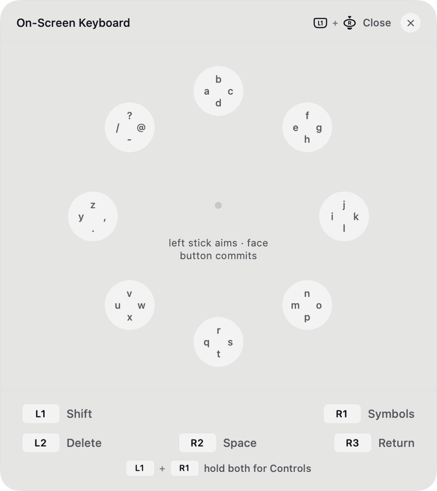
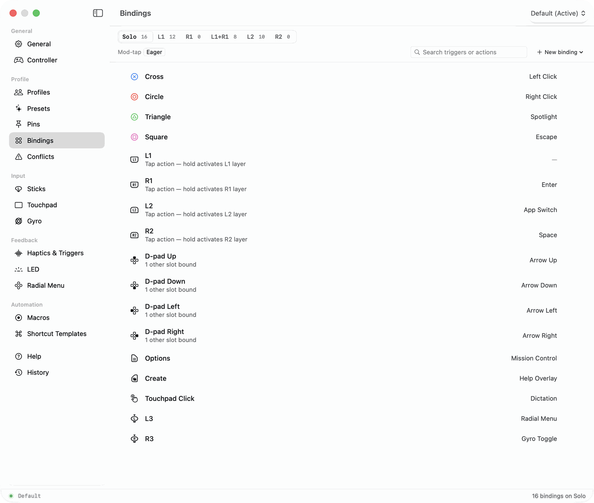
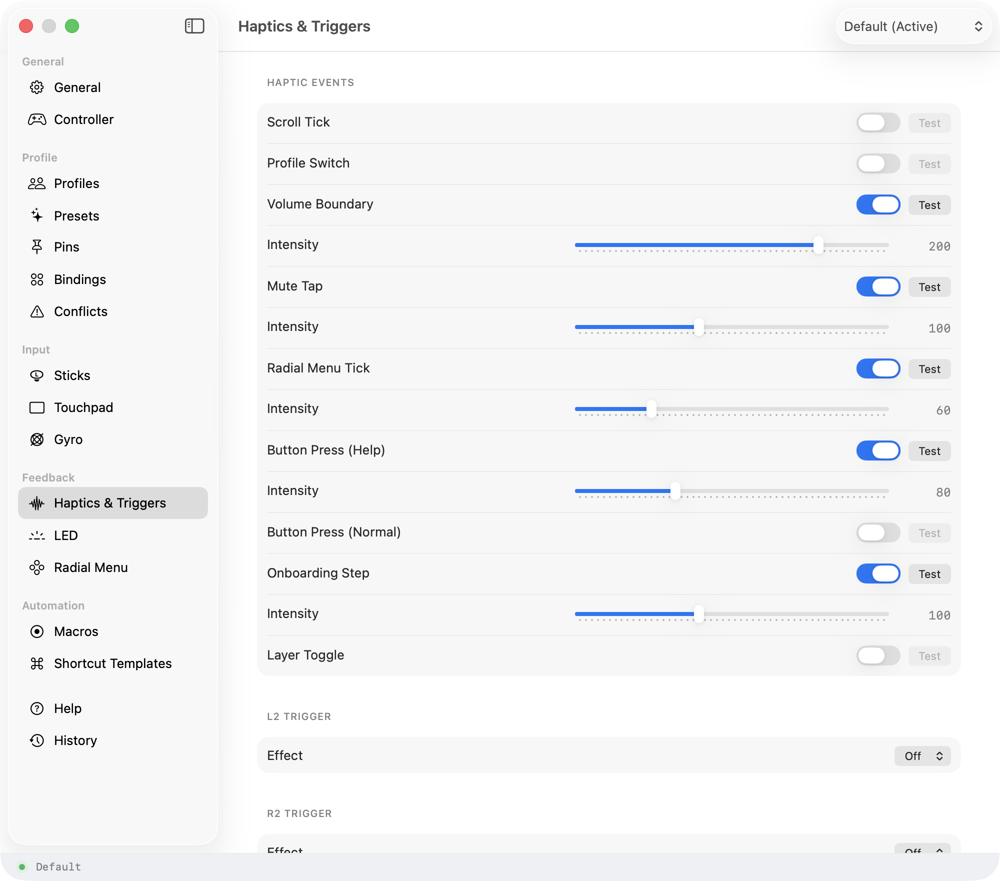
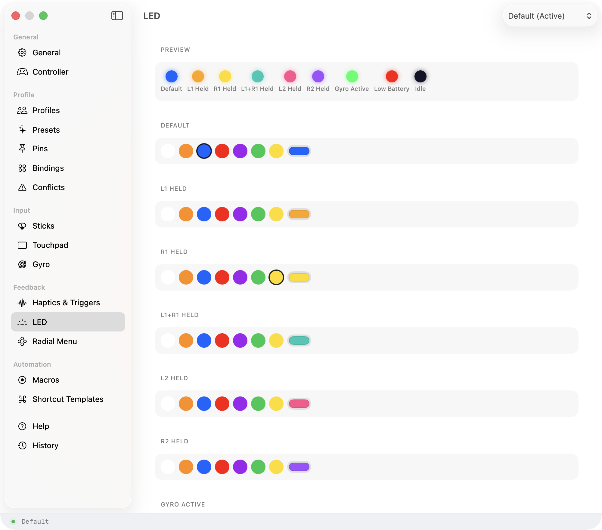
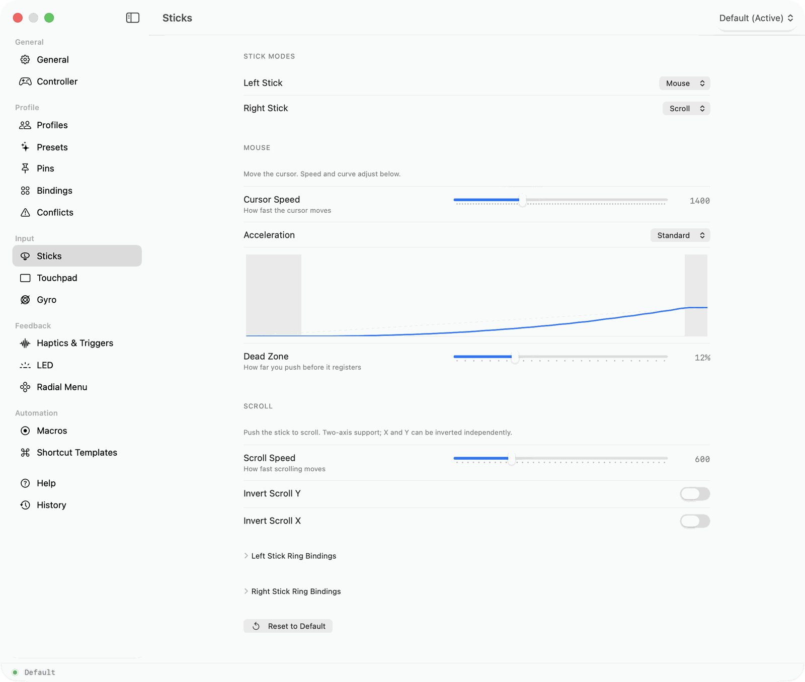

Default
- Left stick: pointer
- Right stick: scroll
- Cross: click
- R1: Spotlight
Verified in Defaults.swift
A Mac app for the controller you already own
Steer turns a game controller into a mouse and keyboard for your Mac. It works the moment you plug it in, and nothing you type ever leaves your computer.
Join the launch list €19.99 once, when it ships
macOS 14+ · Apple Silicon · 315 controllers
A real room. Controller in the foreground, Mac across the room, awake. One arc between them, labelled at each end. Logitech's CMD+C / CTRL+V desk shot is the reference, and it is the only slot on this page that needs a camera.
The same buttons take different jobs in a browser, a video editor and a slide deck. Steer ships with layouts for the apps people use it in most, and you can build your own.
Verified in Defaults.swift
Verified in Defaults.swift
Verified in Defaults.swift
UNVERIFIED. Inferred from the use-case card, not read out of a shipped profile. Check before this ships.
Every shot below is a real pane of the shipped app. Two caveats before any of this leaves the lab: these are PlayStation captures, and the page re-labels itself per controller, which docs/design-rules.md is explicit about; and only some have dark-mode twins.

A ring of your apps at the tip of your thumb. Aim, press, done.

Type where you can already type. A search, an address, a short reply.

Hold one button and every other button takes a second job, the way Shift turns 1 into an exclamation mark.

A pulse for each app you flip past, a tap at the volume ceiling, at a strength you set.

Any colour you like, or wired to tell you what your Mac is doing.

Cursor speed, stick curves and dead zones, tuned until it feels like yours.
No account. No tracking. No analytics, crash reporting or telemetry of any kind. Your mappings live in a file you can open and read.
FIX FIRST: the live trust band says "no cloud" while the app ships optional iCloud profile sync. That is the overstatement the curb forbids.